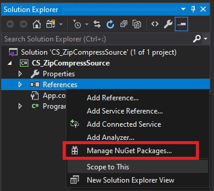
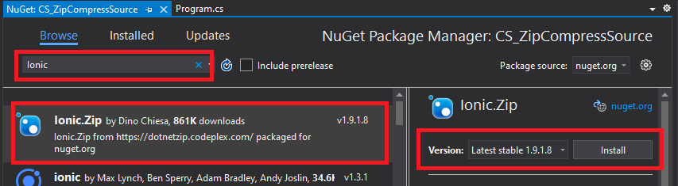
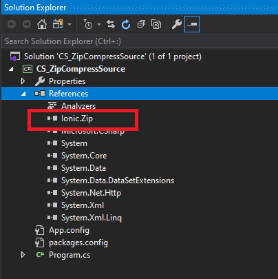
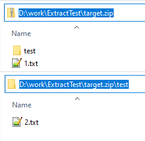
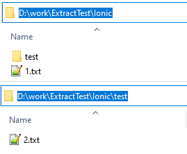
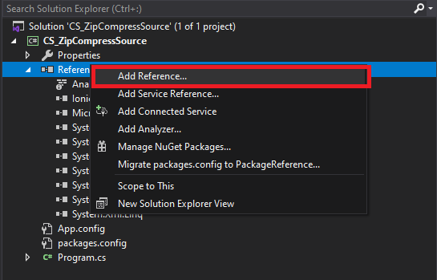
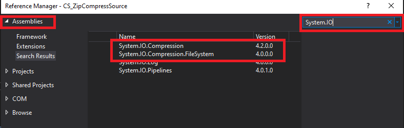
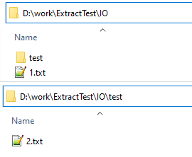

[C#] Zipの圧縮ファイルを解凍するコードを作成する方法
こんにちは。明月です。
この投稿はC#でZipの圧縮ファイルを解凍するコードを作成する方法に関する説明です。
以前、C#でファイルをZipアルゴリズムで圧縮するソースコードに関して説明したことがあります。
link - [C#] Zip圧縮コードを作成する方法
その投稿にも説明しましたが、Zipアルゴリズムは様々なところでよく使うアルゴリズムです。Ionicライブラリと.Net frameworkを利用して圧縮する方法に関して説明しましたが、解凍も同じで作成しましょう。
Ionicライブラリ
Ionicライブラリは外部ライブラリなのでNugetを通ってIonicライブラリをダウンロードと連結をしましょう。



using System;
using System.IO;
using Ionic.Zip;
namespace CS_ZipExtractSource
{
class Program
{
// 解凍する関数
public static void ExtractZipByIonic(string zipPath, string destinationPath)
{
// 解凍するディレクトリが存在するかを確認する。
if (!Directory.Exists(destinationPath))
{
// ディレクトリがなければ作成する。
Directory.CreateDirectory(destinationPath);
}
// zipファイルを読み込む。
using (var zip = new ZipFile(zipPath))
{
// 解凍する。
zip.ExtractAll(destinationPath);
}
}
// 実行関数
static void Main(string[] args)
{
// D:\work\ExtractTest\target.zipファイルをD:\work\ExtractTest\Ionicに解凍する。
ExtractZipByIonic(@"D:\work\ExtractTest\target.zip", @"D:\work\ExtractTest\Ionic");
Console.WriteLine("Press any key...");
Console.ReadKey();
}
}
}
zipファイルの状況は下記のイメージになっています。

解凍しましょう。
実行しました。

解凍されました。
.Net Framework内部を利用する方法
先に「System.IO.Commpress」と「System.IO.Comppression.FileSystem」を追加しましょう。


using System;
using System.IO;
using System.IO.Compression;
namespace CS_ZipExtractSource
{
class Program
{
// 解凍する関数
public static void ExtractZipByIO(string zipPath, string destinationPath)
{
// 解凍するディレクトリが存在するかを確認する。
if (!Directory.Exists(destinationPath))
{
// ディレクトリがなければ作成する。
Directory.CreateDirectory(destinationPath);
}
// zipファイルを読み込む。
using (ZipArchive zip = ZipFile.OpenRead(zipPath))
{
// Zipファイルの中でファイルを読み込む。
foreach (ZipArchiveEntry entry in zip.Entries)
{
// 解凍するファイルを設定する。
var filepath = Path.Combine(destinationPath, entry.FullName);
// ディレクトリを取得
var subDir = Path.GetDirectoryName(filepath);
// ディレクトリがあるかを確認する。
if (!Directory.Exists(subDir))
{
// ディレクトリを作成する。
Directory.CreateDirectory(subDir);
}
// entryにディレクトリがある場合は「Name」がありません。
if (String.IsNullOrEmpty(entry.Name))
{
// ディレクトリの場合は飛び越え。
continue;
}
// ファイルを解凍する。
entry.ExtractToFile(filepath);
}
}
}
// 実行関数
static void Main(string[] args)
{
// D:\work\ExtractTest\target.zipファイルをD:\work\ExtractTest\IOに解凍する。
ExtractZipByIO(@"D:\work\ExtractTest\target.zip", @"D:\work\ExtractTest\IO");
Console.WriteLine("Press any key...");
Console.ReadKey();
}
}
}
zipファイルの状況は下記のイメージになっています。
解凍しましょう。
実行しました。

Ionicと.Net frameworkにあるライブラリで圧縮することと違ってソースの差異があります。Ionicの場合は圧縮のファイルを読み込んで解凍することではなく、ExtractAllの関数を呼び出しで一括で解凍されます。
標準ライブラリの場合は一つ一つの圧縮ファイルを読み込んでIOで作成することです。
個人的に解凍の場合は標準ライブラリがよいと思います。一つ一つのエラー確認やソース応用が可能することを比べてIonicの場合は解凍ソースはすごく簡単だけど、一つのコントロールが難しいなので様々ところで使いにくいと思います。
ここまでC#でZipの圧縮ファイルを解凍するコードを作成する方法に関する説明でした。
ご不明なところや間違いところがあればコメントしてください。
- [C#] 非同期ソケット通信(IOCP)-APMパターン2020/05/18 18:45:37
- [C#] 非同期ソケット通信(IOCP)-EAPパターン2020/05/15 19:31:02
- [C#] NPOIを利用してExcelを読み込んで出力する方法2020/05/08 10:43:52
- [C#] NPOIライブラリを利用してエクセルファイルを生成する方法2020/05/07 01:49:01
- [C#] Geckoライブラリを利用してウェブスクレイピングする方法2020/05/05 00:52:26
- [C#] PDFを作成する方法(iTextSharp)2020/05/03 10:22:40
- [C#] シリアライズ(Serialization)をする方法2020/04/30 19:32:04
- [C#] dynamicタイプの動的パラメータ-DynamicObject(WinFormでASP.MVCのViewBagオブジェクトを使用する方法)2020/04/29 22:41:32
- [C#] Stringの補間式(interpolation)2020/04/27 20:39:57
- [C#] Newtonsoft.JSONライブラリを利用してJsonデータ構造を扱う方法2020/04/23 20:19:53
- [C#] EMailを送信する方法(System.Net.Mail)2020/04/22 19:00:42
- [C#] ini環境ファイルを使う方法2020/04/22 00:09:39
- [C#] 環境設定ファイルを扱う方法(System.Configuration)2020/04/20 19:37:57
- [C#] Reflectionを利用してクラス複製する方法2020/04/17 00:34:33
- [C#] XMLをXPathを利用してデータを取得する方法2020/04/16 00:47:17
- [Python] 20. stringフォマード(Formatting)と補間法(interpolation)2020/06/23 19:03:21
- [Python] 19. 非同期IOのasync/await(asyncio)を使う方法2020/06/22 18:10:12
- [Python] 18. ネットワーク(Socket)通信する方法2020/06/18 19:53:56
- [Python] 17. スレッド(Thread)とロック(lock)、そしてデッドロック(deadlock)2020/06/18 00:19:45
- [Python] 16. IO(ファイル読み取り、書き込み)を扱う方法2020/06/16 18:37:00
- [Python] 15. クラスを継承する方法2020/06/15 18:20:07
- [Python] 14. クラスプロパティ(Property)2020/06/12 17:45:13
- [Python] 13. クラス関数(class method)とダック・タイピング、そして特殊メソッド2020/06/11 19:42:29
- [Python] 12. クラス(Class)を使う方法2020/06/10 19:33:33
- [Python] 11. デコレーター（Decorator）を使う方法2020/06/09 17:27:18
- [Python] 10. モジュールとパッケージ(import)2020/06/08 19:07:50
- [Python] 09. 例外処理する方法2020/06/05 17:11:47
- [Python] 08. ジェネレータ(Generator)2020/06/04 18:46:08
- [Python] 07. globalとnonlocal2020/06/03 20:34:49
- [Python] 06. 関数(function) - インライン関数、callbak、ラムダ(lambda)そしてクロージャ2020/06/02 20:51:22